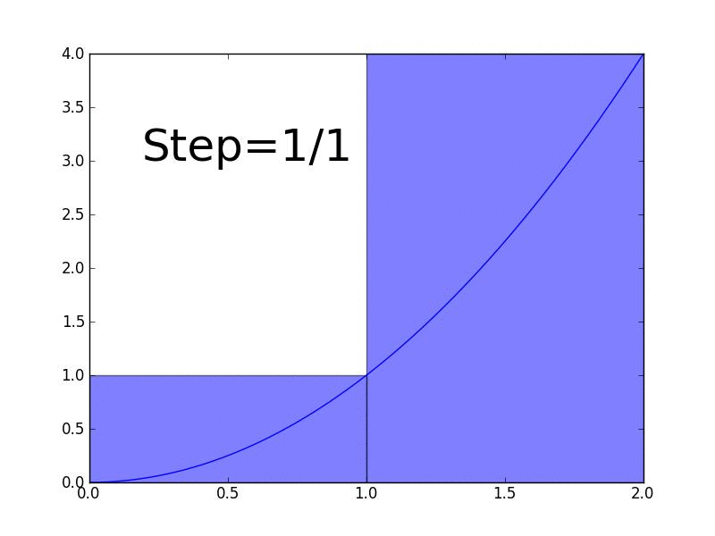

Integrals
Take a moment to recall the derivative question that was posed in the introduction of derivatives on the "derivatives" page. In that question, a position vs. time graph was presented for the motion of a car. The goal was to use that graph to find the speed of the car at any given point. This could be done using derivatives, which give the slope of the line tangent to any given graph, at any given point. Slope, in its simplest form, is a change in y divided by a change in x. In our position vs. time graph, the x-axis was time in seconds, and the y axis was displacement (or position) in meters. So, a change in y divided by a change in x would yield units of meters/seconds, or meters per second. Thus, it seems intuitively reasonable that given a position vs. time graph, speed is represented by the slope of the graph.
Let's suppose though, that we wanted to go in the other direction. That is, what if we were given a velocity vs. time graph, and we wanted to find the car's distance travelled (that is, its position) at a given time? We would have to go in the opposite direction of a derivative. Instead of moving from position to velocity, we would need to try to move from velocity to position. Well as it turns out, this can be done by finding the area underneath the velocity vs. time curve. That is, finding the area of the region bounded by the velocity vs. time curve and the x-axis.
Let's first consider why this works in terms of units. When we were finding the derivative, we divided a resultant change on the y-axis by the incident change on the x-axis. In order to find area, we're going to need square units that are created by multiplying the units of the x-axis by those of the y-axis. For a velocity vs. time graph, the y-axis is measured in meters/second, and the x axis is measured in seconds. So multiplying them, we get:
Let's suppose though, that we wanted to go in the other direction. That is, what if we were given a velocity vs. time graph, and we wanted to find the car's distance travelled (that is, its position) at a given time? We would have to go in the opposite direction of a derivative. Instead of moving from position to velocity, we would need to try to move from velocity to position. Well as it turns out, this can be done by finding the area underneath the velocity vs. time curve. That is, finding the area of the region bounded by the velocity vs. time curve and the x-axis.
Let's first consider why this works in terms of units. When we were finding the derivative, we divided a resultant change on the y-axis by the incident change on the x-axis. In order to find area, we're going to need square units that are created by multiplying the units of the x-axis by those of the y-axis. For a velocity vs. time graph, the y-axis is measured in meters/second, and the x axis is measured in seconds. So multiplying them, we get:
So any region of area on the velocity vs. time graph would have units of meters, which is our goal if we're trying to find total distance. It may feel weird to have units of meters for a two dimensional area, since meters are used to measure one dimensional length. But remember, even though the area is graphically represented as two dimensional, you have to think about what it represents in the real world: the accumulation of distance travelled. And the units of meters don't apply to your visual perception of the graph. They apply to the motion that the area under the curve represents in real life. Let's consider a simplified example, in which a car moves at a constant velocity, say 6 m/s. Its velocity vs. time graph would be a horizontal line through 6 on the vertical axis:
Suppose you were asked how far the car had travelled after 10 seconds. If the car is travelling at 6 m/s for 10 seconds, then the total distance it has travelled will be 6 m/s * 10 s = 60 meters. Simple enough, but notice how this calculation is represented graphically:
The total displacement after ten seconds of the car moving at 6 m/s is equal to the area between the x-axis and the velocity curve (the horizontal line at y=6). When framed as a question about constant velocity, it is easy to see visually that the area underneath the curve represents the accumulation of change of the car's position. But what about functions whose graphs are not horizontal lines? For instance, what if a car's velocity vs. time graph were modelled by the function y = -0.5t2+4t? Suppose you were asked to find the total distance travelled from time t=0 to time t=8. In the case of such a function, the velocity is constantly changing at every single instant, so you can't just multiply a single velocity by an amount of time in order to obtain total distance. What do you do?
To start off, notice that this problem would be much easier if it were broken down into a series of different velocities, each constant for a single second:
For each second in this graph, we can compute the total distance travelled by multiplying the velocity by the amount of time that velocity was travelled at. In this case, each interval is one second. Graphically, this translates to finding the area of the rectangle under each red line, and then summing them up. Of course, this isn't really all that close to the actual total distance travelled. The rectangles are a brutish approximation of the full precision, some of them overestimating, and others underestimating. But notice what happens when we double the number of rectangles, decreasing the width of each one by half:

When we double the number of rectangles and halve the width of each, we can see that they begin to "hug" the actual function more closely. Clearly, if we were to use the same process as before and find the total distance travelled at each velocity by multiplying the velocity by the amount of time for which that velocity was travelled at, (equivalent to finding the area of the rectangle beneath each red line) we would get a much better approximation for the actual total distance travelled by the car whose velocity is modelled by the parabola. In general, the more rectangles we add, the smaller each one gets, and the closer the sum of their areas becomes to the actual total distance travelled. Also, as we add more rectangles, their areas approximate the area underneath the graph. Once we have infinite rectangles, we have acquired the area under the graph in full, unapproximated precision. See the animation below:

What you're seeing is a limiting process. If n represents the number of rectangles, our goal is to take the limit of the sum of their areas as n approaches infinity. In doing so, we can find the exact area under a graph. Finding the area under a curve as a sum of many tiny things is an extremely powerful problem solving tool in math. It isn't only used for cars travelling at non-constant velocities. It can be used to find the accumulation of change of any variable, given the function for its rate of change. For instance, if you're given a function that tells you the rate at which water leaks into a tub at every given moment, finding the area under its curve will allow you to calculate the total amount of water in the tank after any amount of time.
So far, we have a vague sense that an integral goes in the opposite direction from a derivative, and that this corresponds to area underneath a curve. We saw how this makes sense by approximating the area using a series of rectangles, each representing constant velocity for a short period of time. We call this sum of areas an integral, because it brings together, or integrates, all the values of the function. The next section will discuss integral notation and exactly how integrals are related to derivatives. The definite integrals section will explain how to find full, unapproximated accumulation of change without using the limiting process explained above.
So far, we have a vague sense that an integral goes in the opposite direction from a derivative, and that this corresponds to area underneath a curve. We saw how this makes sense by approximating the area using a series of rectangles, each representing constant velocity for a short period of time. We call this sum of areas an integral, because it brings together, or integrates, all the values of the function. The next section will discuss integral notation and exactly how integrals are related to derivatives. The definite integrals section will explain how to find full, unapproximated accumulation of change without using the limiting process explained above.